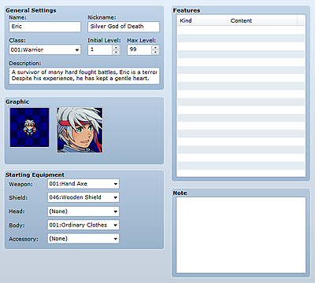

Actor data represents the characters that the player controls. It can also represent actor-specific characteristics.

Name is the actor's name displayed during game play, while Nickname is the actor's alternate name, usually a more descriptive designation. Long names may not display in their entirety in menus and battle screens while playing the game. The name entered in Nickname is displayed at the upper right of the status list window.
Specifies the actor's class. This has an impact on, among other things, the skills that can be used and the weapons and items that can be equipped. The data for classes can be edited on the Classes tab.
Initial Level is the actor's level at the start of the game, and Max Level is the maximum level the actor can attain. The actor cannot exceed the level set for Max Level. Both fields can be specified using a value between 1 and 99.
Specifies introductory text for the actor. This text is displayed at the bottom of the actor's status list screen while playing the game.
Specifies images for the actor. The left pane is for setting a walking graphic to display while moving on the map, and the right pane is for setting a face graphic to display in the status screen and elsewhere. Double-clicking either pane displays a dialog box for specifying the image to use. If you do not want to display a graphic, specify None.
Specifies the equipment with which the actor starts the game. Use the Weapon, Shield, Head, Body, and Accessory drop-down lists to select the actor's starting equipment. Selectable equipment is limited to that which the actor's class can equip. If you do not want to equip anything for a slot, specify None.
Specifies the actor's unique features. Define them in the window that appears when you double-click each line in the Features box. See Setting Features for more information.